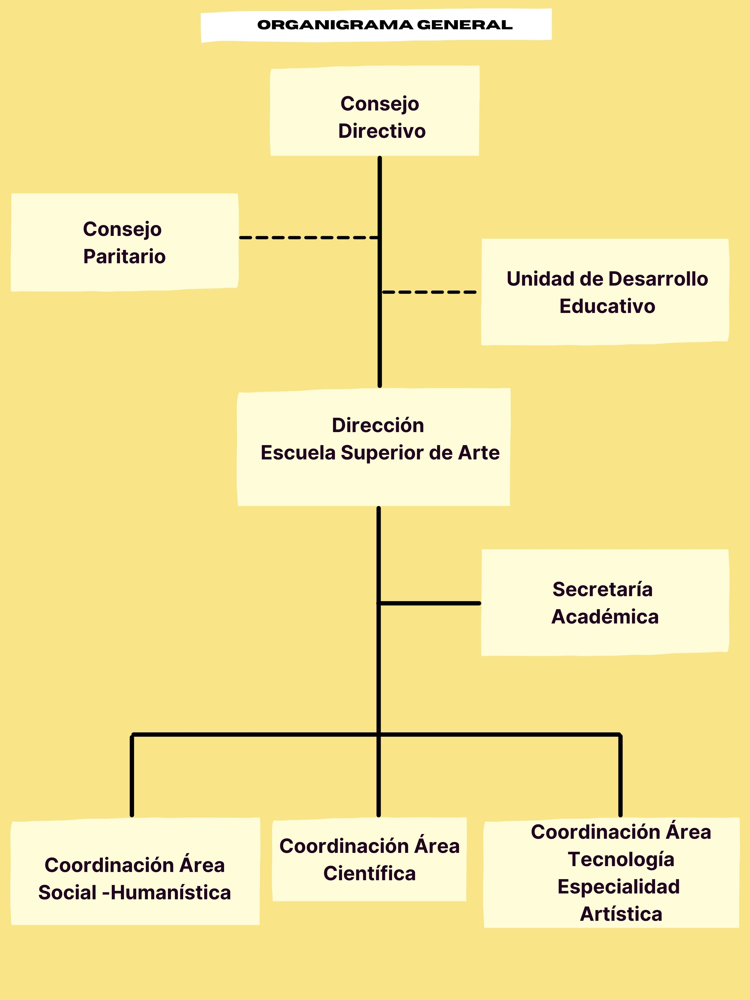
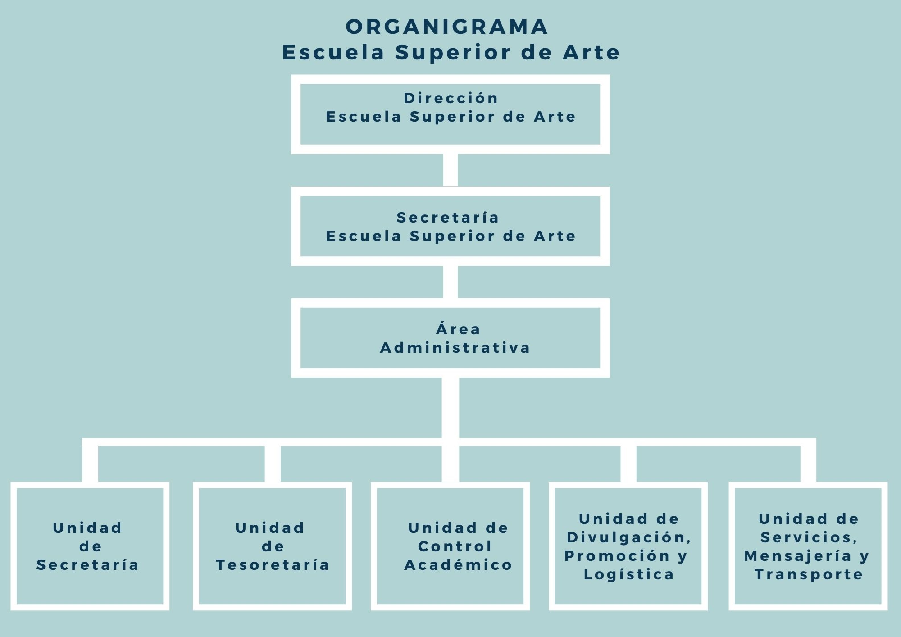
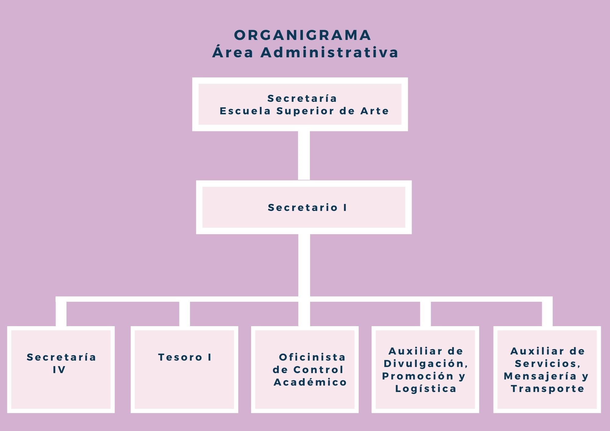

ESA
Nombre de la Institución: Escuela Superior de Arte (ESA)
Tipo de Institución:
- Pública
- División de la Universidad de San Carlos de Guatemala
Ubicación geográfica
- Figura 1
- 2ª. Avenida 12-40, Zona 1, Antigua Escuela de Medicina y Paraninfo Universitario,
- Primer nivel, ala norte, Centro Histórico, Ciudad de Guatemala.
Visión
Elevar el nivel cultural del guatemalteco a través de la creación artística, enriqueciendo la cultura nacional por medio del trabajo de los artistas.
Misión
Formar artistas con capacidad de caracterizar lo guatemalteco y universalizarlo, fomentando el desarrollo social a través de los valores éticos y estéticos contenidos en la creación artística.
Políticas: No tiene.
Objetivos
- Elevar el nivel de competencias y habilidades del artista guatemalteco según carrera.
- Sistematizar la formación profesional del artista, de acuerdo a los fines y objetivos de la Escuela.
- Propiciar el avance progresivo en el aprendizaje de los estudiantes, llevándolos a un desarrollo superior de la profesionalización.
- Provocar la integración de la teoría con la práctica, aprovechando la zona de desarrollo potencial del estudiante.
- Aplicar la diversidad metodológica en la formación de artistas, de acuerdo a la naturaleza de la asignatura de estudios y características del grupo de estudiantes.
- Irrumpir en el espíritu y la psique del artista para estimular la autorrealización y la autonomía de su creación.
- Interrelacionar las áreas de estudio para una mejor interacción del artista con su entorno.
- Promover en el estudiante un aprendizaje significativo, para una producción artística con sentido personal y social.
- Crear carreras artísticas de acuerdo con las necesidades y demandas sociales del país.
- Formar artistas que proyecten su legitimación, identidad y memoria histórica tomando en cuenta la multiculturalidad de la sociedad guatemalteca.
- Promover desde la universidad la innovación artística de nivel superior.
- Estimular e incrementar la investigación artística para apropiarse y recuperar la genuina guatemalidad.
- Incrementar la investigación en las disciplinas artísticas.
- Elevar los niveles técnicos y de conocimiento, del artista guatemalteco.
Funciones
- Desarrollar y proporcionar educación de calidad en las ramas artísticas de Arte Dramático, Artes Visuales, Danza, Música y aquellas que se crearen en el futuro, que interrelacione la problemática e identidad nacional, los valores culturales y estéticos con el quehacer profesional.
- Fomentar la difusión de la cultura a través de la proyección al público la producción artística del profesional universitario, el establecimiento de relaciones con otras instituciones culturales y artísticas, tanto nacionales como extranjeras; y el intercambio de profesores, investigadores y estudiantes con universidades nacionales y extranjeras.
- Proporcionar asesoría técnica, facilitación y acompañamiento en la investigación artística tanto a nivel profesional como estudiantil, que contribuya en forma especial al planteamiento, estudio y resolución de los problemas nacionales en el ámbito artístico.
- Brindar soporte administrativo para el buen funcionamiento de todas las áreas de la Escuela, a través de la gestión, planificación, organización, dirección, control y evaluación de los recursos humanos, financieros, infraestructurales, materiales y equipo, así como la capacitación del recurso humano.
Fines
- Elevar el nivel cultural del guatemalteco, a través de la creación artística.
- Diversificar la educación superior para satisfacer la demanda de estudios artísticos.
- Consolidar la unidad nacional, en la diversidad cultural, a través de la creación artística.
- Formar artistas con capacidad de caracterizar lo guatemalteco y universalizarlo.
- Contribuir a rescatar la memoria artística del país.
- Enriquecer la cultura nacional a través del trabajo profesional de los artistas.
- Difundir las artes en el ámbito nacional: integrando valores culturales nacionales y universales.
- Visualizar que la educación superior es esencial para que todo el país alcance el nivel necesario de desarrollo sostenible natural a partir del patrimonio cultural.
- Fomentar el desarrollo social a través de los valores éticos y estéticos contenidos en la creación artística.
- Coadyuvar al vínculo e interacción entre universidad y sociedad guatemalteca a través de la Escuela Superior de Arte.
Estructura Organizacional
La Escuela Superior de Arte de la Universidad de San Carlos de Guatemala está integrada por el Consejo Directivo, Consejo Paritario, Unidad de Desarrollo Educativo, Dirección de Escuela Superior de Arte, Secretaría Académica, Coordinación Área Social Humanística, Coordinación Área Científica y Coordinación Área Tecnológica Especialidad Artística.
Organigrama General
- Figura 2
- Organigrama General de la Escuela Superior de Arte

Referencia:
- ______ Línea de Mando
- ------ Línea de Asesoría (Cotuc)
- Consejo Directivo: Es el máximo órgano de dirección de la Escuela Superior de Arte. Es su responsabilidad operativizar y fomentar el desarrollo de la Escuela Superior de Arte, así como dirigir y administrar la misma. Provisionalmente, está integrado por los Decanos de la Facultad de Humanidades, Facultad de Arquitectura y el Director General de Extensión Universitaria, en tanto se lleven a cabo los procesos eleccionarios correspondientes.
- Consejo Paritario: Está integrado por un profesor electo por el claustro de profesores titulares y un estudiante electo, por cada carrera, de acuerdo con lo que indica el Capítulo III, Elección de miembros del Consejo Paritario, artículos 18 al 22 del Reglamento.
- Unidad de Desarrollo Educativo: Es una unidad asesora del Consejo Directivo encargada de informar y apoyar la toma de decisiones en asuntos de su competencia. Para su funcionamiento se dividirá en atención a asuntos estudiantiles y asuntos docentes. Asuntos estudiantiles está integrado por: Control Académico, Comisión de Bienestar Estudiantil y Comisión de Ubicación y Nivelación –CUN- y otras de carácter académico estudiantil que se crearen en el futuro. Asuntos docentes está integrado por: Comisión de Evaluación Docente COMEVAL, Jurado de Concursos de Oposición, Comisión de Formación y Desarrollo del Profesor Universitario, Sistema de Ubicación y Nivelación –SUN-, Comisión curricular y otras de carácter académico docente que se crearen en el futuro.
- Dirección Escuela Superior de Arte: Es la unidad académica responsable de planificar, dirigir, coordinar, supervisar y controlar las actividades de la Escuela, así como de informar y asesorar al Consejo Directivo para dar cumplimiento a los objetivos planteados. La conforma el Director de Escuela.
- Secretaría Escuela Superior de Arte: Es la instancia de coordinación académica responsable de planificar, organizar, dirigir y controlar las actividades técnicas y docentes de la Escuela Superior de Arte. La conforma el Secretario de Escuela.
- Coordinación Área Social-Humanística: Es el área que tiene a su cargo la formación profesional artística en Arte Dramático, Artes Visuales, Danza y Música, orientada en el ámbito social a formar en el estudiante el pensamiento reflexivo y crítico. Esta formación ubica al estudiante en el análisis del origen y desarrollo de la sociedad y sus instituciones, así como de las ideas y relaciones que configuran la vida social del hombre. También, orientada en el ámbito humanístico a formar el pensamiento creador, liberando todas las formas, según el constructivismo endógeno y exógeno. En correspondencia con lo cualitativo, esta formación ubica al estudiante en el análisis de la esencia constitutiva del hombre como ser y ente creador y lúdico. Comprende las disciplinas que se encuentran consignadas en el ámbito correspondiente en el entramado curricular, según carrera, a nivel de licenciatura.
- Coordinación Área Científica: Es el área que tiene a su cargo la formación profesional artística en Arte Dramático, Artes Visuales, Danza y Música, orientada a formar el pensamiento racional, lo integran las habilidades del pensamiento abstracto y formal, en correspondencia con lo cuantitativo. Esta formación ubica al estudiante en el mundo de las ciencias, al proporcionarle principios, leyes y criterios para obtener una representación real, objetiva y verificable del mundo ante los problemas y situaciones de su vida profesional. En este ámbito están comprendidas las ciencias exactas y las que lleven a desarrollar la función de investigación. Comprende las disciplinas que se encuentran consignadas en el ámbito correspondiente, en el entramado curricular, según carrera, a nivel de licenciatura.
- Área Tecnológica-Especialidad Artística: Es el área que tiene a su cargo la formación profesional artística en Arte Dramático, Artes Visuales, Danza y Música, orientada en el ámbito tecnológico a fortalecer el proceso intelectual, con énfasis en el dominio motriz. Esta formación ubica al estudiante en el saber hacer, definido como el conjunto de conocimientos propios de una técnica para formar un profesional hábil, con el máximo desarrollo de destrezas y habilidades, capaz de desenvolverse en el mundo práctico. También está orientada en el ámbito especialidad-artística a fortalecer la creación, con un pensamiento integrador y sintético, en donde lo racional y sentimental; lo teórico y lo práctico; lo llevan a la creación de una obra única, idiosincrática, irrepetible. Esta formación ubica al estudiante en el expresar su ser, su voluntad, a la autorrealización, a la alegría. Comprende las disciplinas que se encuentran consignadas en el ámbito correspondiente en el entramado curricular, según carrera, a nivel de licenciatura.
Organigrama Específico
- Figura 3
- Organigrama Específico de la Escuela Superior de Arte

Referencia:
- ______ Línea de Mando (Cotuc)
Organigrama Específico de Puestos de Área de Administración
- Figura 4
- Organigrama Específico de les Puestos de Área de Administración de la Escuela Superior de Arte

Referencia:
- ______ Línea de Mando (Cotuc)